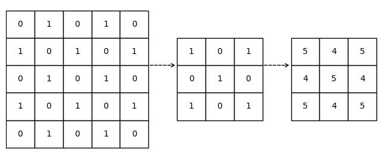
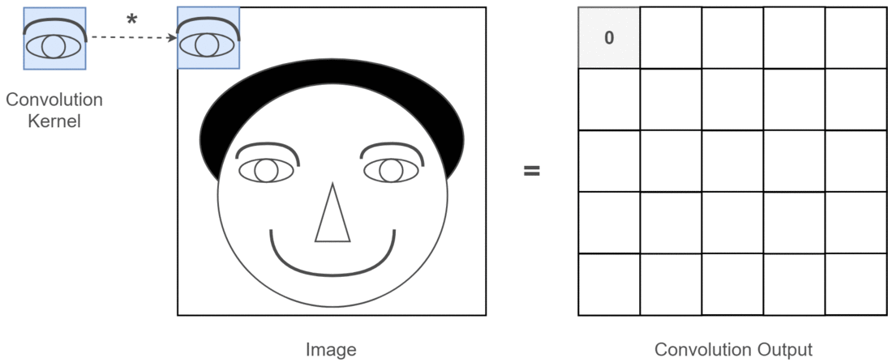

Code
# !pip install opencv-python numpy matplotlib pandas scikit-learn
Before you start, make sure you have the required libraries installed, if not, simply uncomment the lines below (remove the #) and run the cell to install them:
# !pip install opencv-python numpy matplotlib pandas scikit-learnMathematically speaking, Convolution is an operation that combines two functions to produce a third function, which has a variety of applications in signal processing, image analysis and more. While this may sound complex, we can minimize the math behind it and explain it in a less harmful and vivid way.
Let’s begin by imagining a simple scenario: you took a picture of a cute dog, and you want to apply a filter to it so that it looks more vibrant and colorful. Now that you input the image into a computer, how does a computer “see” it? The computer would see the image as a grid of numbers, where the combination of 3 numbers (R, G, B) in a grid represents the color of a pixel, and with all the colored pixels combined, it forms the image. Given the numeric nature of a computer image, we say that the image is digitalized.
Here, let’s read in the image into Python using OpenCV and display it using matplotlib:
# Load necessary libraries
import cv2
import numpy as np
import matplotlib.pyplot as plt
# Read the image in BGR format
# Note this is the default input format of Python OpenCV
doge_bgr = cv2.imread('images/Original_Doge_meme.jpg')
# Therefore we need to convert the color mapping to RGB
doge_rgb = cv2.cvtColor(doge_bgr, cv2.COLOR_BGR2RGB)
# Display the image using matplotlib
plt.figure(figsize=(4, 4))
plt.imshow(doge_rgb)
plt.axis('off')
plt.title('Input Image \n Sato (2010)."Kabosu the Shiba Inu"')
plt.show()The image doesn’t look like numbers, does it? In fact, if we zoom in close enough, we can clearly see that the image is made up of pixels. But we still don’t see the numbers, this is because the numerical information is decoded by the computer and displayed as a colored pixel. However, we can easily convert the image into a numerical representation.
For demonstration purpose, the image is rescaled to a 10 \(\times\) 10 grid, where within each cell, the numbers represents the R, G, B values (0-255) of each pixel.
Note that compressing images to a smaller size is always easier comparing to enhancing images to a larger size, as compression can be done by going through the image pixel by pixel and averaging the color values in each cell, while enhancement usually requires more complex operations. This gives us a hint on why convolution is important.
img_rgb = cv2.resize(doge_rgb, (10, 10), interpolation=cv2.INTER_NEAREST)
# Plot the RGB matrix
fig, ax = plt.subplots(figsize=(6, 6))
h, w = img_rgb.shape[:2]
ax.imshow(img_rgb, extent=[0, w, h, 0])
# Set ticks to show grid at pixel boundaries
ax.set_xticks(np.arange(0, w + 1, 1))
ax.set_yticks(np.arange(0, h + 1, 1))
ax.set_xticklabels([])
ax.set_yticklabels([])
ax.grid(color='black', linewidth=1)
for i in range(h):
for j in range(w):
r, g, b = img_rgb[i, j]
brightness = int(r) + int(g) + int(b)
color = 'white' if brightness < 380 else 'black'
ax.text(j + 0.5, i + 0.5, f'({r},{g},{b})',
ha="center", va="center", fontsize=6, color=color)
# Display the Grid
ax.set_title("RGB Value Grid of Doge Image Resized to 10x10")
plt.tight_layout()
plt.show()The image has become a little abstract. Can you still identify the original image out of it?
While the resized image looked significantly different, it still contains the necessary information, and same ideas also applies to larger images. That is, all images can be represented as a grid of numbers, where the 3 numbers in each cell corresponds to the color of a pixel. Computers can’t see colors like we do, the way they see colors is as if they were mixing colors using a palette that only has red, green and blue (RGB), where each color has an “amount” of intensity between 0 and 255. With the 3 values for red, green and blue, computers can create any color we see in the world.
Back to the dog picture, it is easy to see that resizing the image to a smaller grid loses a lot of details, especially the rich color that makes the image vibrant. If we want to keep the complete color information, alternatively, we can plot out the distribution of the RGB values and frequencies in the image using a histogram. While this gives us a good idea of the color distribution, it does not tell us much about the spatial relationships between the pixels.
# Compute and plot the color histogram
colors = ('r', 'g', 'b')
plt.figure(figsize=(6, 4))
for i, col in enumerate(colors):
hist = cv2.calcHist(
images=[doge_bgr], # source image (still in BGR)
channels=[i], # which channel: 0=B, 1=G, 2=R
mask=None,
histSize=[256],
ranges=[0, 256]
)
plt.plot(hist, color=col)
plt.xlim([0, 256])
# Display the histogram
plt.title('RGB Histogram')
plt.xlabel('Pixel Value')
plt.ylabel('Frequency')
plt.tight_layout()
plt.show()Can you still identify the original image out of it?
The example above shows us what images are like in the eyes of a computer. Computers do not understand images in the same way that humans do, they can only see them as a collection of numbers. It thus make sense that we need to apply some math to these numbers to either change the image or extract some useful information from it, and that’s where convolution comes in.
Before we dive into the application of it, let’s first understand how convolution operate on an image in a more intuitive way:
Think of copying a painting by first sketching its outline at the same size. To add your own flair, you use a patterned brush: wherever the brush touches, it brightens the paint. You move this brush methodically across your sketch, from left to right, top to bottom so every spot is stamped with the pattern, tweaking the original image into something familiar yet distinctly styled.
Here, the brush you used is called a kernel in the context of convolution, and the process of applying the brush is what we call convolution operation. We would define the kernel as a small matrix of numbers that represents the pattern of the brush, and the convolution operation as the process of transforming the original image by applying the kernel to it.
Here is a gif illustrating how our filter (the kernel) will work on the image mathematically. You can see it as the small brush that slides over the image, operating on a small region of the image at a time, and eventually producing a new image that was completely transformed by the filter.

Now, let’s return to the example of the cute dog picture. What we are going to apply is a brush called sharpening filter, it is a 3 \(\times\) 3 matrix that looks like this:
\[ \text{Sharpening Filter} = \begin{bmatrix} 0 &-1 & 0 \\ -1 & 5 & -1 \\ 0 & -1 & 0 \end{bmatrix} \]
Don’t panic as we are not going to do any math here, we will just let computer do the math for us. The only thing you need to know is that this kernel will enhance the edges of the image, making it look sharper and more defined. For better understanding, let’s visualize it to see what this kernel look like in grey-scale:
sharp_kernel = np.array([
[ 0, -1, 0],
[-1, 5, -1],
[ 0, -1, 0]
], dtype=np.float32)
fig, ax = plt.subplots(figsize=(4, 4))
# Display with true gray-scale between kernel's min and max
im = ax.imshow(sharp_kernel, cmap='gray_r',
vmin=sharp_kernel.min(), vmax=sharp_kernel.max())
ax.set_title('Sharpening Kernel')
ax.axis('off')
plt.tight_layout()
plt.show()If you take a closer look at the kernel, you will see that it has a positive value in the center and negative values around it, and it has 0 values on the corners. This exactly looks like a brush that enhances the center of a region while reducing the intensity of the surrounding pixels, which is exactly what we want to achieve with the filter.
# Define the sharpening filter
kernel = np.array([
[ 0, -1, 0],
[-1, 5, -1],
[ 0, -1, 0]
], dtype=np.float32)
# Apply the kernel to the color image using filter2D.
filtered = cv2.filter2D(doge_rgb, ddepth=-1, kernel=kernel)
filtered = np.clip(filtered, 0, 255).astype(np.uint8)
# Display the original and filtered images side by side
fig, (ax1, ax2) = plt.subplots(1, 2, figsize=(8, 4))
# Input
ax1.imshow(doge_rgb)
ax1.set_title('Input Image \n Sato (2010)."Kabosu the Shiba Inu"')
ax1.axis("off")
# Output
ax2.imshow(filtered)
ax2.set_title("Filtered Image (Sharper & More Vibrant)")
ax2.axis("off")
plt.tight_layout()
plt.show()The difference is quite obvious now. You can clearly see that the sharpened image (R) has more contrast and the edges are more defined, making it look more vibrant and colorful. This is the power of convolution, it allows us to apply filters to images and transform them in a way that is not possible with simple pixel manipulation. Similarly, we can blur an image quite easily, for which the “brush” we are going to use looks like this
\[\text{Box Blur Filter} = \begin{bmatrix} \frac{1}{9} &\frac{1}{9} & \frac{1}{9} \\ \frac{1}{9} & \frac{1}{9} & \frac{1}{9} \\ \frac{1}{9} & \frac{1}{9} & \frac{1}{9} \end{bmatrix} \]
Visually, this kernel is a filter that looks like:
id_kernel = np.array([
[ 1, 1, 1],
[ 1, 1, 1],
[ 1, 1, 1]
])
blur_kernel = np.array([
[1/9, 1/9, 1/9],
[1/9, 1/9, 1/9],
[1/9, 1/9, 1/9]
], dtype=np.float32)
fig, axes = plt.subplots(1, 2, figsize=(8, 4))
for ax, kernel, title in zip(axes, [id_kernel, blur_kernel],
['Input Image', 'Box Blur Kernel']):
# Show actual values in gray-scale
im = ax.imshow(kernel, cmap='gray_r', vmin=0, vmax=1)
ax.set_title(title)
ax.axis('off')
# Draw horizontal and vertical boundary lines at half‐integer positions
for i in range(1, kernel.shape[0]):
ax.axhline(i - .5, color='white', linewidth=1.5, zorder=1)
ax.axvline(i - .5, color='white', linewidth=1.5, zorder=1)
plt.tight_layout()
plt.show()Let’s see what it will make on our input image.
# Define the box blur filter
kernel = np.array([
[1/9, 1/9, 1/9],
[1/9, 1/9, 1/9],
[1/9, 1/9, 1/9]
], dtype=np.float32)
# Apply the kernel to the color image using filter2D.
filtered = cv2.filter2D(doge_rgb, ddepth=-1, kernel=kernel)
filtered = np.clip(filtered, 0, 255).astype(np.uint8)
# Display the original and filtered images side by side
fig, (ax1, ax2) = plt.subplots(1, 2, figsize=(8, 4))
# Input
ax1.imshow(doge_rgb)
ax1.set_title('Input Image\n Sato (2010)."Kabosu the Shiba Inu"')
ax1.axis("off")
# Output
ax2.imshow(filtered)
ax2.set_title("Filtered Image (Blurred)")
ax2.axis("off")
plt.tight_layout()
plt.show()It worked as we expected, now the dog image becomes more blurry.
However, convolution on image is not limited to filtering, it can also be used to extract features from the image. For example, we can use a kernel to detect edges, lines and texts in images, we can even use specific kernels to detect specific shapes or patterns in images, such as a kernel that detects anything that looks like a dog. As you can imagine, this is a very powerful tool in many applications, in fact, you most likely have already used it in your daily life. For example, when you use a photo editing app to apply a filter to your picture, the app is using convolution. When you use a search engine to search do image searches, the search engine is using convolution to extract features from the images and match them with your search query. Let’s say, the thing you are trying to find is eyes, the gif below shows how a convolution kernel detects “eyes” in an image:

This is a very simple example, and it is implemented exactly the same way as we did with the sharpening filter. The only difference is that to extract a specific features, we need to use a “brush” designed to detect that feature, which usually requires some knowledge of the feature we want to extract. For example, if we want to detect eyes in the painting, we would need our “brush” to understand what eyes look like and what typical colors they have. This could be way too complicated for a single “brush”, so we often use multiple brushes to detect different features when it comes to the task of feature extraction.
To demonstrate how convolution extracts a specific feature from an image, let’s take a look at a different “art tool”. Let’s say this time you don’t want to color the painting differently, but rather you want to sketch a line art based on the original painting. You would use a fineliner pen that detects the edges of a painting and draw a line along them. In the eyes of a computer, these are the tools it is going to use:
\[\text{Horizontal Sobel} = \begin{bmatrix} 1 & 0 & -1 \\ 2 & 0 & -2 \\ 1 & 0 & -1 \end{bmatrix} \text{, } \text{Vertical Sobel} = \begin{bmatrix} 1 & 2 & 1 \\ 0 & 0 & 0 \\ -1 & -2 & -1 \end{bmatrix} \]
Still, don’t panic, we won’t do any math in this notebook. All you need to know is these two kernels together are called Sobel filter, and what they do is highlighting the edges in the image, making them more visible. We can also visualize them as follows:
h_kernel = np.array([
[ 1, 0, -1],
[ 2, 0, -2],
[ 1, 0, -1]
])
v_kernel = np.array([
[ 1, 2, 1],
[ 0, 0, 0],
[ -1, -2, -1]
])
# Plot the kernels
fig, axes = plt.subplots(1, 2, figsize=(8, 4))
for ax, kernel, title in zip(axes, [np.abs(h_kernel), np.abs(v_kernel)],
['Horizontal Kernel', 'Vertical Kernel']):
# Show actual values in gray-scale
im = ax.imshow(kernel, cmap='gray_r', vmin=0, vmax=2)
ax.set_title(title)
ax.axis('off')
plt.tight_layout()
plt.show()If you take a closer look at the kernels, you will see that the first one has positive values on the left and negative values on the right, while the second one has positive values on the top and negative values on the bottom. This pattern intuitively tells us that the first “pen” will scan through the image horizontally and extract the horizontal edges, while the second “pen” will scan through the image vertically and extract the vertical edges.
Let’s now look at a different example and see what happens when we apply the Sobel filter.
# Generate a greyscale version of the image
hill_bgr = cv2.imread('images/xiangbishan.jpg')
hill_rgb = cv2.cvtColor(hill_bgr, cv2.COLOR_BGR2RGB)
hill_gray = cv2.cvtColor(hill_bgr, cv2.COLOR_BGR2GRAY)
# Define the Sobel filter kernel
sb_kernel_h = np.array([
[ 1, 0, -1],
[ 2, 0, -2],
[ 1, 0, -1]
], dtype=np.float32)
sb_kernel_v = np.array([
[ 1, 2, 1],
[ 0, 0, 0],
[-1, -2, -1]], dtype=np.float32)
# Apply the kernel to the color image using filter2D.
horiz = cv2.filter2D(hill_gray, -1, sb_kernel_h)
vert = cv2.filter2D(hill_gray, -1, sb_kernel_v)
combined = cv2.convertScaleAbs(np.sqrt(vert.astype(np.float32)**2 + horiz.astype(np.float32)**2))
# Display the original and filtered images side by side
fig, (ax1, ax2) = plt.subplots(1, 2, figsize=(8, 5))
# Input
ax1.imshow(hill_rgb)
ax1.set_title('Input Image \n xiquinhosilva (2018). "Elephant Trunk Hill"')
ax1.axis("off")
# Output
ax2.imshow(combined, cmap = 'gray')
ax2.set_title("Filtered Image (Edges Highlighted)")
ax2.axis("off")
plt.tight_layout()
plt.show()As we can see in the example above, the Sobel filter detects the edges in the image and highlights them like a fineliner pen. This is a very useful technique in image processing, as it allows us to extract features from the image that can be used for further analysis or classification. Let’s do more explorations with the example above:
# Compute the magnitude and orientation of the gradient.
# To put it simpler, they represents the length and direction of the edges at each pixel.
# For those who are familiar with pythagorean theorem, the magnitude is exactly the length of the"long edge" calculated with pythagorean theorem.
magnitude = np.sqrt(vert.astype(np.float32)**2 + horiz.astype(np.float32)**2)
orientation = np.arctan2(vert.astype(np.float32), horiz.astype(np.float32))
# Generate an edge binary map
mag_norm = cv2.normalize(magnitude, None, 0,255, cv2.NORM_MINMAX).astype(np.uint8)
_, edge_binary = cv2.threshold(mag_norm, 50, 255, cv2.THRESH_BINARY)
# Create the Contour plot
contours, _ = cv2.findContours(edge_binary, cv2.RETR_EXTERNAL, cv2.CHAIN_APPROX_SIMPLE)
contour_img = hill_rgb.copy()
cv2.drawContours(contour_img, contours, -1, (255,0,0), 1)
# Create an edge density heatmap
block = 32
h, w = edge_binary.shape
int_img = cv2.integral(edge_binary)
heatmap = np.zeros_like(edge_binary, dtype=np.float32)
for y in range(0, h - block + 1):
for x in range(0, w - block + 1):
y1, x1 = y, x
y2, x2 = y + block, x + block
total = (int_img[y2, x2]
- int_img[y1, x2]
- int_img[y2, x1]
+ int_img[y1, x1])
# center the block’s density back into the heatmap
heatmap[y + block//2, x + block//2] = total
heatmap = cv2.normalize(heatmap, None, 0,255, cv2.NORM_MINMAX).astype(np.uint8)
# Plot out the visualizations
fig, axs = plt.subplots(2, 2, figsize=(8, 5))
ax1, ax2, ax3, ax4 = axs.flatten()
# Original Image
ax1.imshow(hill_rgb)
ax1.set_title("Input Image")
ax1.axis("off")
# Contours on Original Image
ax2.imshow(contour_img)
ax2.set_title("Contours on Original Image")
ax2.axis("off")
# Edge Density Heatmap
ax3.imshow(heatmap, cmap="hot")
ax3.set_title("Edge Density Heatmap")
ax3.axis("off")
# Edge Orientation Histogram
angles_deg = np.degrees(orientation[magnitude > 50].flatten())
ax4.hist(angles_deg, bins=36, range=(0, 90), color='purple')
ax4.set_title("Edge Orientation Histogram")
ax4.set_xlabel("Angle (degrees)")
ax4.set_ylabel("Frequency")
plt.tight_layout()
plt.show()Here, we have generated three visualizations based on the extracted edge data.
The examples above demonstrated the power of convolution in both image processing and image analysis, and more importantly, convolution is very efficient, as it is easy for computers to understand and process, and can be applied to images of any size without losing information. This is why convolution has become a fundamental operation in computer vision and image processing.
But as you are probably aware, implementing convolution from scratch can be quite tedious, especially when we need to perform more specific tasks such as detecting texts or some specific shapes. A more advanced, adaptable and efficient way of applying convolution has been developed, which is called Convolutional Neural Network (CNN), and we will discuss it in the next notebook.
Wikipedia contributors. (2025, June 18). Convolution. In Wikipedia, The Free Encyclopedia. Retrieved June 18, 2025, from https://en.wikipedia.org/wiki/Convolution
Sato, A. (2010, September 13). Kabosu the Shiba Inu (“Doge”) [Photograph]. Flickr. This photo is cited and used under https://creativecommons.org/licenses/by-sa/2.0/
xiquinhosilva. (2018, June 14), Elephant Trunk Hill [Photograph]. Flickr. This photo is cited and used under https://creativecommons.org/licenses/by-sa/2.0/
GeeksforGeeks. (n.d.). Types of Convolution Kernels. Retrieved July 16, 2025, from https://www.geeksforgeeks.org/deep-learning/types-of-convolution-kernels
OpenCV.org. (n.d.). Image Processing in OpenCV. Retrieved July 16, 2025, from https://docs.opencv.org/4.x/d2/d96/tutorial_py_table_of_contents_imgproc.html